Built for speed, designed for music lovers, engineered to stay out of your way.
Gapless playback for seamless album listening. Crossfading from 0 to 10 seconds between tracks. Native codec support for audio and video files — no transcoding, no plugins.
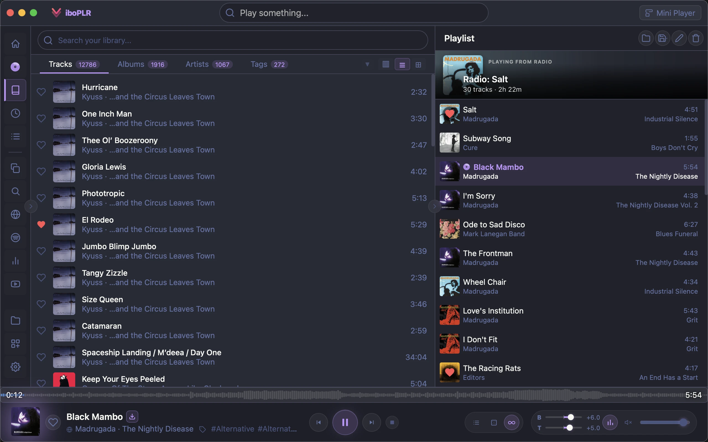
Point Viboplr at your music folders and it handles the rest. Background scanning reads metadata intelligently, and real-time file watching catches every change the moment it happens.
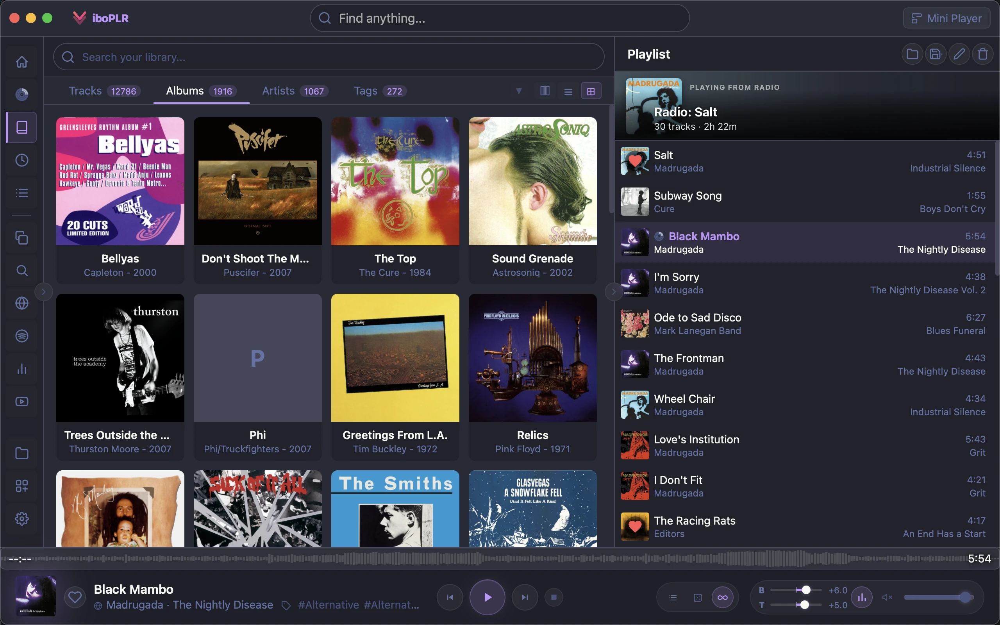
FTS5-powered full-text search across artists, albums, tracks, and tags. Accent-insensitive and forgiving — find what you want even when you can't remember the exact spelling.
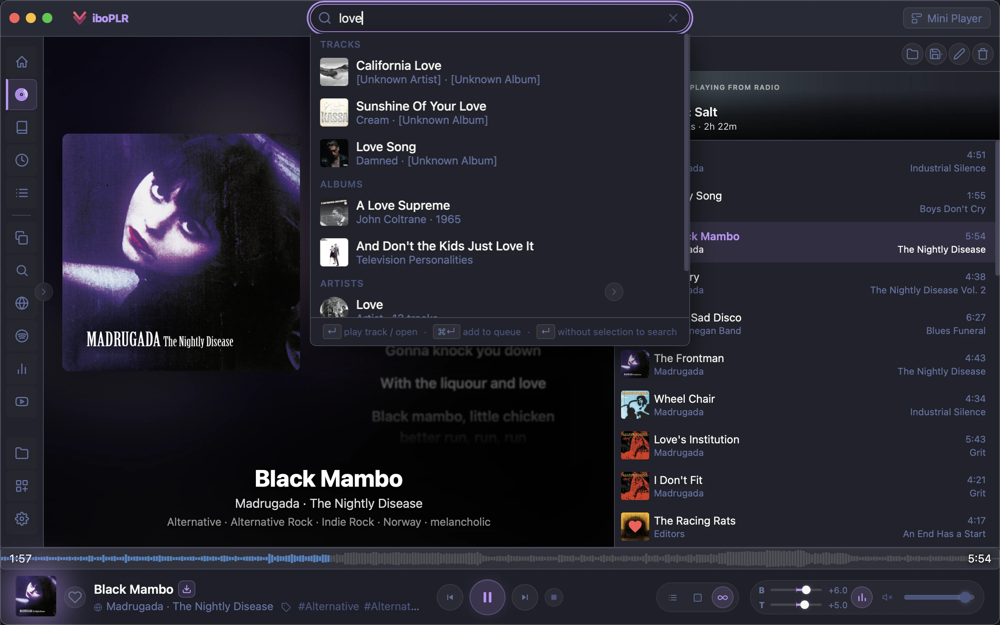
Connect to Subsonic and Navidrome servers alongside your local folders. Add TIDAL Hi-Fi for lossless streaming. One unified library, one player, zero friction.
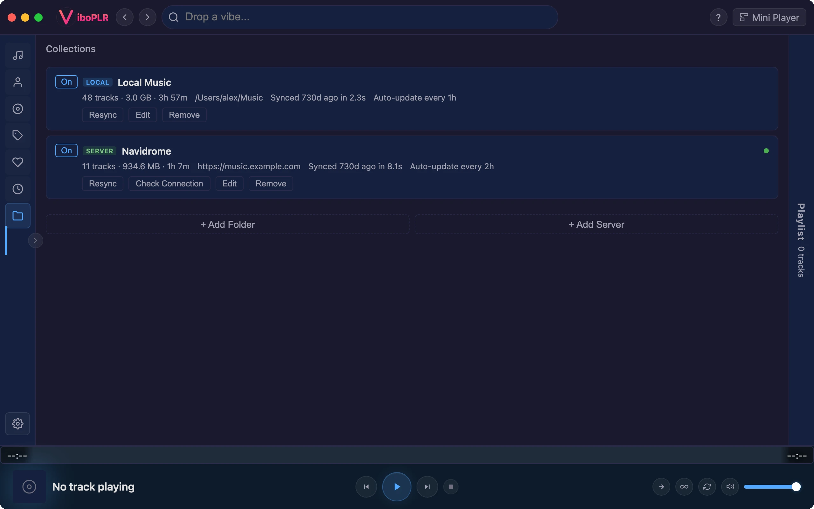
A compact, always-on-top mini player that stays visible while you work. Draggable, auto-resizing, and just the right amount of information at a glance.
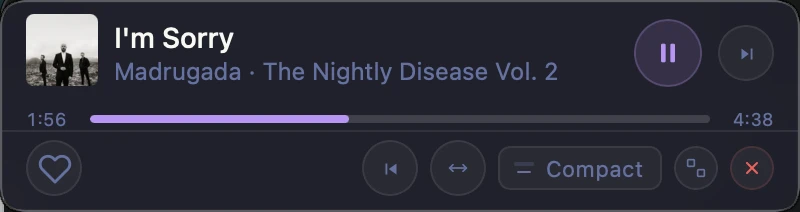
Over 35 keyboard shortcuts for everything from playback to navigation. Never leave the keyboard — control your music as fast as you can think.
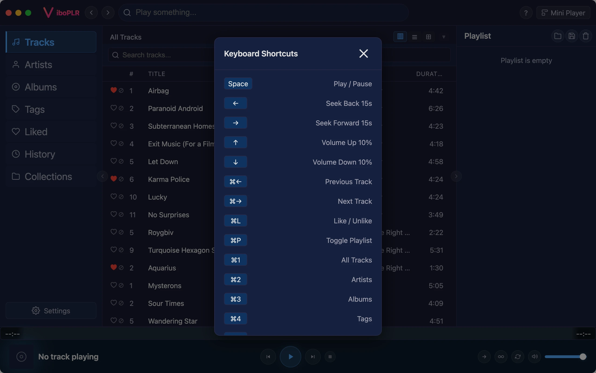
Choose from 8 built-in skins or install community skins from the gallery. Import your own JSON skin files with 13 customizable color tokens and optional custom CSS.
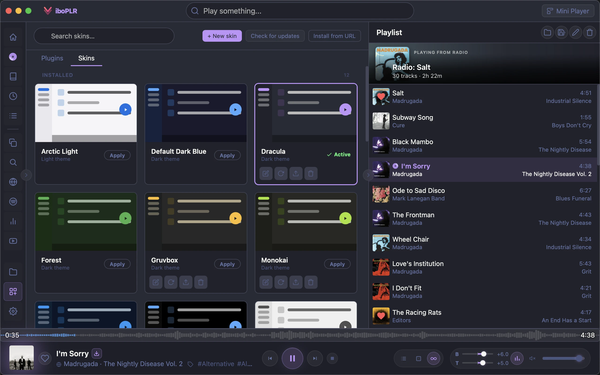
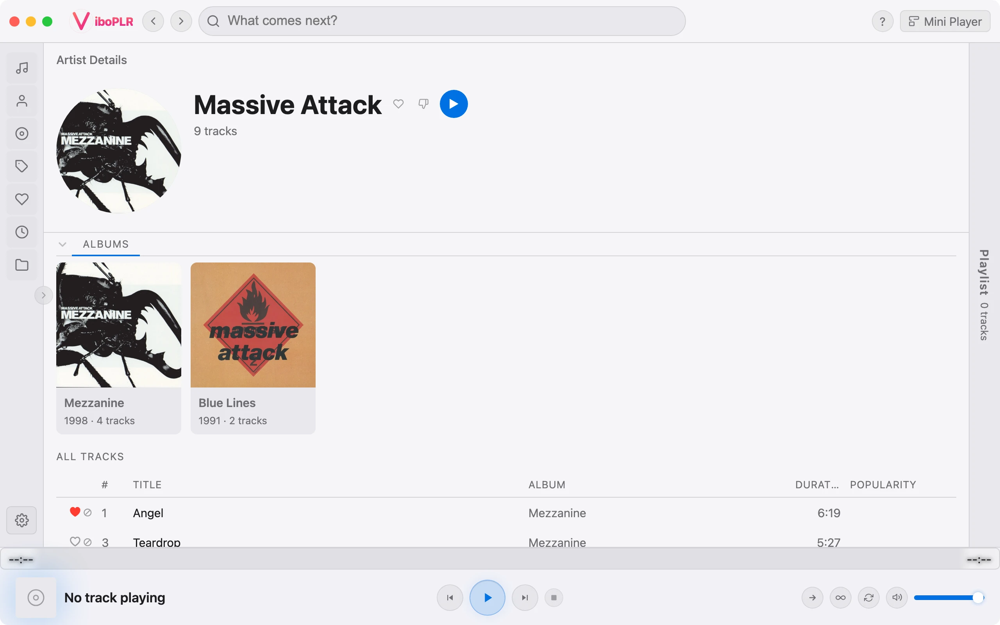
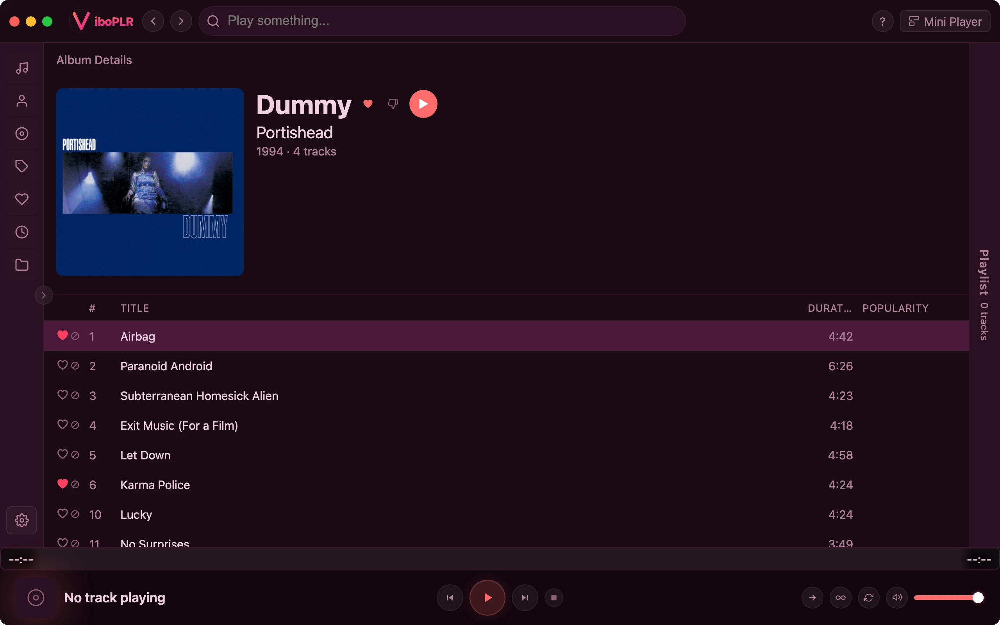
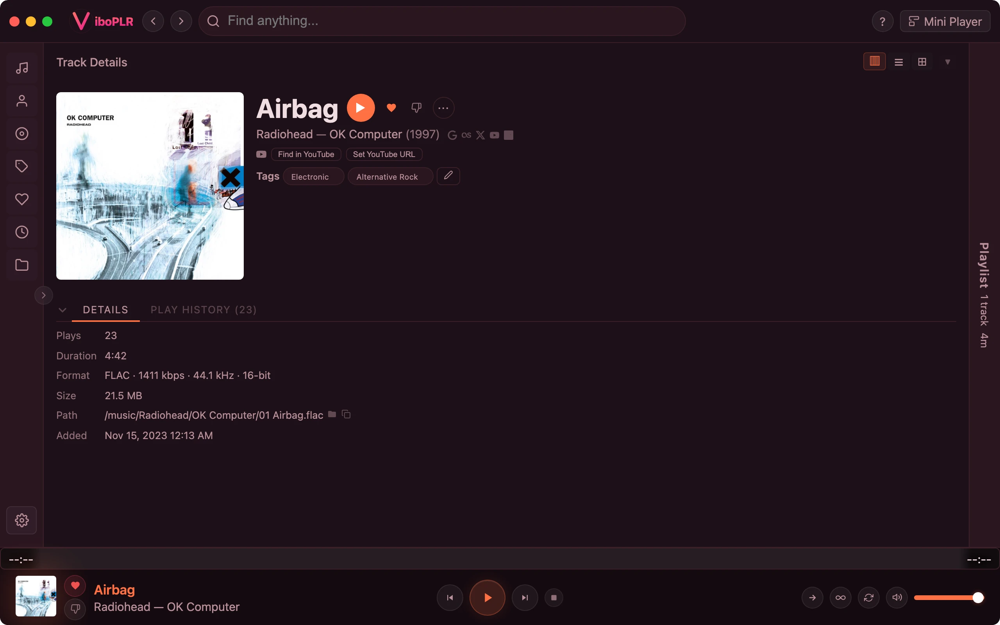
Smart auto-continue picks the next track using weighted strategies. Last.fm integration surfaces similar artists, similar tracks, artist bios, and community tags — all cached locally for instant access.
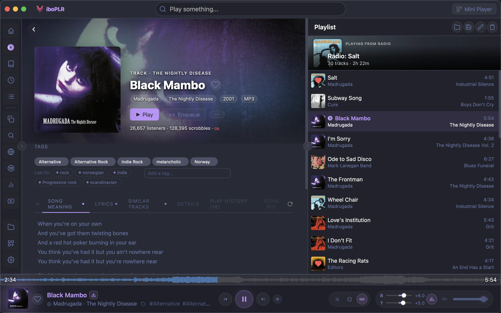
A JavaScript plugin system that lets you add custom sidebar views, context menu actions, and event hooks. Built-in plugins ship with the app, and user plugins can override or extend anything.
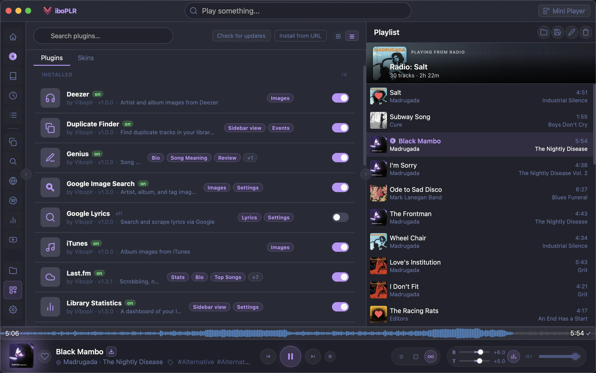
Free, fast, and built for music lovers.